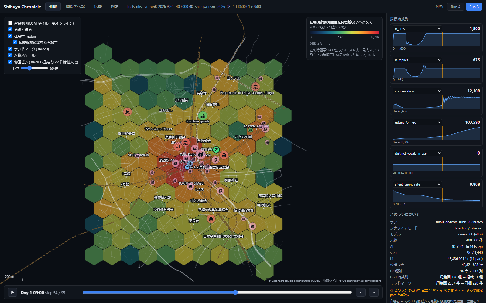
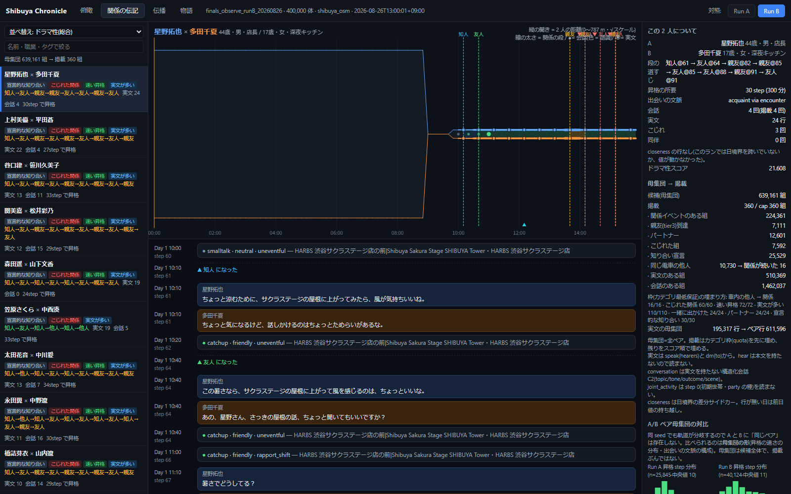
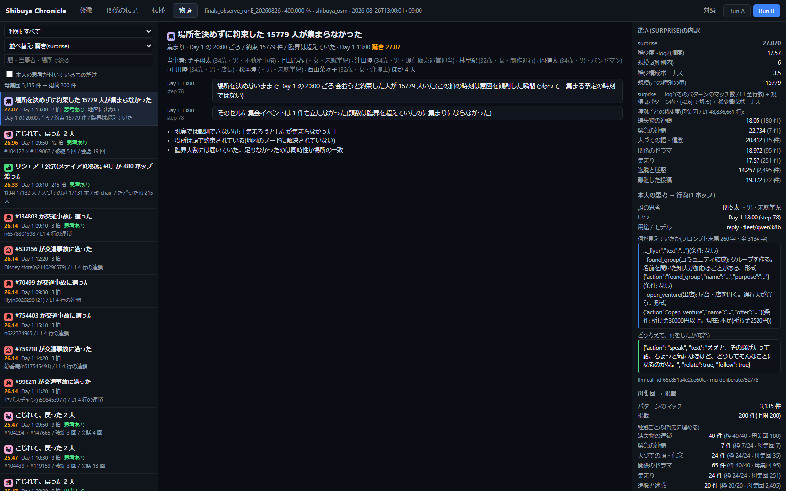

AUTOMATA 第2回ハッカソン 本選
shibuya-simulation ｜ 2026-08-30
「世界の理解は、自分の手で世界を作ることで可能になる。」——目標は、現実の渋谷を仮想空間に再現すること。世界そのものがプロダクトであり、研究観測はその上で走るアプリケーションである。
では、群衆・交通・経済をどれだけ精密にしても、それは「社会」なのか？
私たちは同一条件の渋谷を2つ用意し、「自分で考える力」だけを変えた対照実験を行った。
思考予算を最小化(cap 300)。人流・経済・出来事はすべて動くが、エージェントはほぼルールで行動する。
フル認知(cap 4,500)。同一seed・同一40万人・同一渋谷で、各自がLLMで考え、話し、計画する。
統制: 同一乱数seed(42)・同一の100万人名簿・同一の物理と地図。差は認知だけ。両ランを同一範囲(シミュ内土曜0:00-15:00)で直接比較。
OSM実地図(地下街・デッキ含む)
国交省PLATEAU実3D形状
ODPT実ダイヤの実発車
経済センサス較正の企業
国勢調査IPF較正ペルソナ+LLM生成の来歴
気象庁実測から較正した天候生成
現実整合の較正アンカー(出典・split宣言付き)

実測信号(スクランブル交差点 周期140秒)・改札の待ち行列・駅員と車掌・交番8箇所・夜勤3,370社——「見えない労働」まで全員がエージェント。
左: 俯瞰ビュー実画面(在場20万人のhexbin・実OSM地図・物語ピン)。
| 現象(同一範囲 0-89step) | ルールの街 | 考える街 | 倍率 |
|---|---|---|---|
| 人づての信念伝達 | 7 | 878 | ×125 |
| 誤情報の流通 | 6 | 342 | ×57 |
| DM | 260 | 9,872 | ×38 |
| 関係の破綻 | 430 | 15,820 | ×37 |
| SNS投稿 | 35 | 1,048 | ×30 |
| 実発話 | 6,728 | 170,679 | ×25 |
| 知人形成 | 1,500 | 23,392 | ×16 |
ルールの街に口コミは存在しない。信念34.5万件のうち人づては7件——全員が「自分で見た」ことしか信じない街。
考える街では、言葉が発された瞬間に噂・誤情報・関係のドラマが一斉に創発した。
統制の証拠: 救急事案の発生は両ラン6件で完全一致=世界で「起きること」は同じ。変わったのは、それを取り巻く社会だけ。
知人⇄他人を3往復して友人に至った2人。本人の思考テキスト8行付きで追跡できる。
「今度集まろう」と場所を決めない約束——ルールの街2,549人・考える街15,779人、実現した集会はゼロ。現実では観測不可能な「起きなかった出来事」。
落とす→拾得→交番→遺失届→返還・報労金451円。返還率は現実統計と一致(財布70%・携帯88%)。
10,730組のfamiliar strangers、関係に発展したのは16組(0.15%)。接触の量ではなく、会話が関係を作る。


Chronicle実画面: 左=関係の伝記(昇格の段・こじれ・会話実文) 右=物語ピン(集まらなかった15,779人・本人のLLM入出力つき)
この「未発火の記録」こそ対照実験の誠実さであり、創発には何が足りないかを定量的に示す成果である。——この"足りないもの"の定量化が、そのままv2の設計仕様になった(最終スライド)。
本番ラン(A5000×7・vLLM艦隊5+2)
L1イベントストリーム(197種・因果列付き)
resume==straightをバイト一致で機械証明
エンジン本体(トグル379件を全数宣言)
メタ安全保障への接続——誤情報の流通×57・救急の連鎖・群衆密度・「集まらなかった15,779人」。社会の脆弱性と情報環境のダイナミクスが、実データの街の上で・介入ゼロで・全記録つきで創発する。現実で起きる前に、仮想の渋谷で連鎖を観測できる。
衛星・都市データの上に「考える住民」と観測装置(Chronicle・イベントフィード・全員の伝記)を重ねる。施策・防災・情報環境の事前検証を製品にする。
6,782テスト・resume==straightバイト一致・「観測がシムを変えない」機械保証の上で、現実では取れないデータ(不発の臨界・伝播木・接触ネットワーク)を生成・公開する。
対照実験が示した通り、連鎖は「心」を入れた瞬間にだけ立ち上がる——社会の風洞には、考える住民が要る。
v1の正直な限界——本選中の監査で28件の内部矛盾を特定。根は3本:
v2(要件確定・文献較正済み)——世界の再現方式を「三層」に再設計:
保存則(金・モノ・身体・時間)と物理・台帳だけをエンジンに残す
手順は書かない。役割を配り、手続きは本人のLLM世界知識から
未定義の行動はGM的LLMが裁定→判例に結晶化=ルールブックが自己成長(先行ゼロの領域)
+ 思考がシミュ内時間を消費(0.04秒/token=人間の熟考実測と定量一致)・イベント駆動の時間・習慣⇄速い⇄遅いの3層認知・GPU常駐物理(50万体33ms/frame実証)・実フロー経済・忠実度計器盤(現実整合37アンカーのライブ照合)。
「ルールが再現できるのは人流まで。社会は、内面からしか生まれない。」